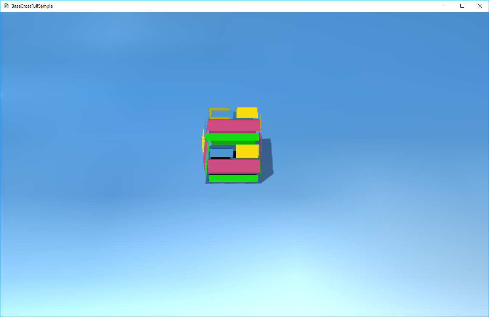

１０２．移動する立方体
ここでは、左右に移動する立方体の紹介です。
このサンプルは
FullTutorial002というディレクトリに含まれます。
BaseCrossDx11.slnというソリューションを開くと
Dx11版が起動します。
リビルドして実行すると以下の画面が出てきます。1つの立方体が左右に移動するのがわかると思います。

図0102a
解説
このサンプルでは、
ゲームステージに
ゲームオブジェクトを配置しています。
ここで配置しているオブジェクトは
プレートと呼ばれる
ゲーム盤と
立方体です。
オブジェクトを配置する前に、
リソースを登録します。
リソースというのは、テクスチャやオーディオファイル、メッシュなどの
メモリに負担かけそうなデータです。
BaseCrossでは、実際に配置させるゲームオブジェクトと
リソースを分けることで、オブジェクト間での
リソースの共有ができるようになってます。
その記述は、
シーンにあります。以下がシーン内の
Scene::CreateResourses()関数です。
void Scene::CreateResourses() {
wstring DataDir;
App::GetApp()->GetDataDirectory(DataDir);
wstring strTexture = DataDir + L"sky.jpg";
App::GetApp()->RegisterTexture(L"SKY_TX", strTexture);
strTexture = DataDir + L"trace.png";
App::GetApp()->RegisterTexture(L"TRACE_TX", strTexture);
}
この項からは
namespace basecrossの記述は省略します。何も断らない限り
namespace basecross内にコードがあると思ってください。
この関数
Scene::CreateResourses()では、2つの画像ファイルを
テクスチャとして
リソース化しています。
まず、
wstring DataDir;
App::GetApp()->GetDataDirectory(DataDir);
でデータディレクトリを取得します。
App::～という記述は
Appクラスのstatic関数呼び出しです。
Appクラスというのは、このアプリケーションに一つしか存在しません。（シーンもそうですが）。
シングルトンというパターンにデザインされていて、
App::GetApp()でその唯一のポインタを取得できます。
このポインタは
unique_ptrになっているので
コピーすることができません。
なので、
App::GetApp()->GetDataDirectory()のようにAppクラスのメンバ関数を呼び出す場合は続けて記述します。
App::GetApp()->GetDataDirectory()のような感じです。
GetDataDirectory()関数は引数に
wstringの参照を取ります。データのディレクトリを取得するわけですが、ソリューションディレクトリの直下にある
mediaディレクトリがデータディレクトリです。
この
mediaディレクトリは、実行ファイルと同じディレクトリ直下にあればその中を参照します。開発中は
デバッグモードと
リリースモードをしょっちゅう切り替えると思うのでソリューションの直下でも参照できるようになってます。
mediaディレクトリの
Shadersディレクトリにはコンパイルされたシェーダが入ります。（拡張子は.cso）
Scene::CreateResourses()関数では、このデータディレクトリを取得して、その中の
sky.jpgおよび
trace.pngを
テクスチャリソースとして登録します。
wstring strTexture = DataDir + L"sky.jpg";
App::GetApp()->RegisterTexture(L"SKY_TX", strTexture);
リソースは、このように
キーワードを指定して登録します。上記の登録後は、意識的に登録から削除しない限り
L"SKY_TX"というキーワードで参照できるようになります。
リソースの登録は
シーンから行わなければいけないわけではありません。ステージで行うこともできます。
App::GetApp()で
Appクラスのインスタンスを取得できる場所であれば、実行中はどこでも登録できます。
ゲームステージ
オブジェクトを配置しているのは
GameStage.h/cppになります。
プレートの作成
まず
プレートです。
プレートは以下のコードで実装しています。
GameStage.cppに記述があります。
//プレートの作成
void GameStage::CreatePlate() {
//ステージへのゲームオブジェクトの追加
auto Ptr = AddGameObject<GameObject>();
auto PtrTrans = Ptr->GetComponent<Transform>();
Quaternion Qt;
Qt.RotationRollPitchYawFromVector(Vector3(XM_PIDIV2, 0, 0));
PtrTrans->SetScale(200.0f, 200.0f, 1.0f);
PtrTrans->SetQuaternion(Qt);
PtrTrans->SetPosition(0.0f, 0.0f, 0.0f);
//描画コンポーネントの追加
auto DrawComp = Ptr->AddComponent<PNTStaticDraw>();
//描画コンポーネントに形状（メッシュ）を設定
DrawComp->SetMeshResource(L"DEFAULT_SQUARE");
//自分に影が映りこむようにする
DrawComp->SetOwnShadowActive(true);
//描画コンポーネントテクスチャの設定
DrawComp->SetTextureResource(L"SKY_TX");
}
ステージに配置されるオブジェクトは
GameObjectクラスか、もしくは
GameObjectの派生クラスをあらかじめ作成してそれを配置します。
通常は派生クラスを作成します。プレートについては
派生クラスを作成しなくても作れるということのサンプルです。
ここではまず
auto Ptr = AddGameObject<GameObject>();
という記述で、
GameObjectクラスのインスタンスを作成し、ステージに登録します。
AddGameObjec関数は
可変長のテンプレート関数で、
GameStageクラスの親クラスである
Stageクラスのメンバ関数です。
AddGameObject<作成する型>(可変長引数);
という書式になります。
この記述により、指定の型のオブジェクトが作成され、そのオブジェクトの
OnCreate仮想関数を呼び出し、インスタンスのポインタ
（shared_ptr）が返されます。
続く
auto PtrTrans = Ptr->GetComponent<Transform>();
は、AddGameObjectの戻り値（shared_ptr）を使用して
Transformコンポーネントを取得します。
BaseCrossは
コンポーネント方式を使用しています。
コンポーネントというのは、そのオブジェクトが使用する機能をそれぞれのクラスごとに変えることができるものです。
コンポーネントには大きく分けて
Update系と
Draw系があります。
Update系にはそのオブジェクトの動きや衝突判定などがあります。
Draw系は描画方法です。主にシェーダに関連します。
通常コンポーネントは
AddComponent関数を使って、使用するコンポーネントを
追加します。すでに追加されているコンポーネントは
GetComponent関数で取得します。
しかし、ここの
Transformコンポーネントだけは特殊で
すべてのゲームオブジェクトが保持しています。ですので追加しなくても
GetComponent関数で取得することができます。
AddComponent関数および
GetComponent関数はどちらも
テンプレート関数で以下のような書式です。
AddComponent<作成する型>(可変長引数);
GetComponent<見つける型>(見つからなかったときに例外が発生するかどうか);
です。
GetComponent関数の
例外が発生するかどうかはbool値で、
trueかfalseかを指定します。ただこの引数はデフォルト化されているので何も記述しなければ、
true（例外が発生する）になります。
さて
プレートのTransformを取得したら、
Quaternion Qt;
Qt.RotationRollPitchYawFromVector(Vector3(XM_PIDIV2, 0, 0));
PtrTrans->SetScale(200.0f, 200.0f, 1.0f);
PtrTrans->SetQuaternion(Qt);
PtrTrans->SetPosition(0.0f, 0.0f, 0.0f);
のように、
スケーリング、回転、平行移動（位置）を指定します。回転は
クオータニオンを使用していますが、上記のように回転ベクトルから作成できます。
続いて、
Draw系コンポーネントである、
PNTStaticDrawコンポーネントを追加します。このコンポーネントはTransformのようにあらかじめ追加されてませんので
AddComponent関数を使って追加します。追加したら以下のような設定をします。
//描画コンポーネントの追加
auto DrawComp = Ptr->AddComponent<PNTStaticDraw>();
//描画コンポーネントに形状（メッシュ）を設定
DrawComp->SetMeshResource(L"DEFAULT_SQUARE");
//自分に影が映りこむようにする
DrawComp->SetOwnShadowActive(true);
//描画コンポーネントテクスチャの設定
DrawComp->SetTextureResource(L"SKY_TX");
ここでは、形状（メッシュ）に
L"DEFAULT_SQUARE"を使ってます。この
DEFAULT_なんたらというキーワードは、あらかじめ登録されているリソースです。リソースは
テクスチャリソースの登録はすでに説明しましたが、
形状（メッシュ）の登録はまだ説明してません。しかし、ここではあらかじめ登録されている形状を使用します。登録されている形状は以下の通りです。
L"DEFAULT_SQUARE" ３Ｄ上の平面
L"DEFAULT_CUBE" 立方体
L"DEFAULT_SPHERE" 球体
L"DEFAULT_CAPSULE" カプセル
L"DEFAULT_CYLINDER" シリンダー（土管型）
L"DEFAULT_CONE" コーン（円錐）
L"DEFAULT_TORUS" トーラス（ドーナッツ）
L"DEFAULT_TETRAHEDRON" 正四面体
L"DEFAULT_OCTAHEDRON" 正八面体
L"DEFAULT_DODECAHEDRON" 正十二面体
L"DEFAULT_ICOSAHEDRON" 正二十四面体
これらの形状は、別にモデルを作成する必要がないオブジェクトの形状として使用できます。また、メモリ上は１個しかありませんのでメモリ上の圧迫は非常に少なくて済みます（描画上のコストはもちろんかかりますが）。
プレートは
L"DEFAULT_SQUARE"（つまり３Ｄ上の平面）を使います。
続いて、
自分に影が映りこむようにする設定を行います。
SetOwnShadowActive()関数です。影は
シャドウマップ方式を使用しています。影は
影を出すほうと
影を受けるほうを設定します。ここでプレートに設定しているのは
影を受ける設定です。
影を出すほうの設定は、
立方体の作成のところで説明します。
最後に
描画コンポーネントテクスチャの設定を行います。ここではシーンで登録したテクスチャを
SetTextureResource()関数で設定します。
ここまでで、プレートの作成は終わりです。実際にステージ上に配置するためにはこの
GameStage::CreatePlate()関数を、
GameStage::OnCreate()関数で呼び出す必要があります。
立方体の作成
立方体はプレートとは違って、
新しいクラスを作成して実装します。プレートのように
作成したら最後まで変わらないオブジェクトであれば
GameObjectクラスのインスタンスとして作成できますが、通常は動的に変化します。その場合は
GameObjectの派生クラスを作成します。
立方体クラスは
Character.h/cppに記述があります。
まず、
Character.hです。ここでは
立方体クラスである
Boxクラスを宣言しています。以下がそのコードです。
class Box : public GameObject {
Vector3 m_StartPos;
float m_TotalTime;
public:
//構築と破棄
Box(const shared_ptr<Stage>& StagePtr, const Vector3& StartPos);
virtual ~Box();
//初期化
virtual void OnCreate() override;
//更新
virtual void OnUpdate() override;
};
GameObjectの派生クラスを作成するには
１つだけ制約があります。それは
コンストラクタの第１引数はconst shared_ptr<Stage>& StagePtrにしなければいけない、ということです。
GameObjectの派生クラスは
GameObject同様、
AddGameObjec()関数により、そのステージに配置されるわけですが、その中で、第１引数である
ステージは、該当するステージが自分自身のポインタを渡します。そのようなメカニズムにより、
GameObjectの派生クラスは
コンストラクタやOnCreate関数で、所属ステージにアクセスすることができるようになります。
GameObjectの派生クラスとして新しいクラスを作成することで、
OnCreate()仮想関数や
OnUpdate()仮想関数を記述することが可能になります。
続いて、
Character.cppです、ここでは宣言された関数の実体を記述します。
Box::Box(const shared_ptr<Stage>& StagePtr, const Vector3& StartPos) :
GameObject(StagePtr),
m_StartPos(StartPos),
m_TotalTime(0)
{
}
Box::~Box() {}
//初期化
void Box::OnCreate() {
auto PtrTrans = GetComponent<Transform>();
PtrTrans->SetScale(Vector3(1.0f, 1.0f, 1.0f));
Quaternion Qt;
Qt.Identity();
PtrTrans->SetQuaternion(Qt);
PtrTrans->SetPosition(m_StartPos);
//影をつける
auto ShadowPtr = AddComponent<Shadowmap>();
ShadowPtr->SetMeshResource(L"DEFAULT_CUBE");
//描画コンポーネント
auto PtrDraw = AddComponent<PNTStaticDraw>();
PtrDraw->SetMeshResource(L"DEFAULT_CUBE");
PtrDraw->SetTextureResource(L"TRACE_TX");
//透過処理
SetAlphaActive(true);
}
//更新
void Box::OnUpdate() {
//前回のターンからの経過時間を求める
float ElapsedTime = App::GetApp()->GetElapsedTime();
m_TotalTime += ElapsedTime;
if (m_TotalTime >= XM_2PI) {
m_TotalTime = 0;
}
auto Pos = GetComponent<Transform>()->GetPosition();
Pos.x = sin(m_TotalTime);
GetComponent<Transform>()->SetPosition(Pos);
}
Character.cppには上記のように
４つの関数の実体があります。
まずコンストラクタですが、メンバイニシャライザで、各メンバ変数の初期化を行っています。
デストラクタは空関数となっています。
OnCreate()仮想関数では、プレートの構築時と同じように、コンポーネントの追加やそのパラメータ設定を行っています。
ここで注意したいのは
影の表示です。プレートでは
影の反映を設定しましたが、ここでは
影を出す設定をします。
//影をつける
auto ShadowPtr = AddComponent<Shadowmap>();
ShadowPtr->SetMeshResource(L"DEFAULT_CUBE");
のように、影を付けるためには
Shadowmapコンポーネントを追加します。また、影を描画するための
形状（メッシュ）も指定します。ここでは描画するのに使用している
L"DEFAULT_CUBE"（同じもの）を指定します。
なぜ、影の形状を設定するのか疑問に思うかもしれません。このサンプルの場合は、描画も影も同じで問題ないのですが、例えば
３Ｄ上にあるのに２Ｄの表現のようなキャラクターを実装する場合があります。この場合、影は
丸影を使ったりもします。このように、本体と影を別に設定することができることで、いろんなカスタマイズが可能になります。
Boxクラスには
Box::OnUpdate()関数が実装されています。この関数は１ターンに一度呼び出される関数で、このオブジェクトの
変化を記述します。このサンプルでは、オブジェクトは
左右に行ったり来たりするのでその処理を記述します。
まず
//前回のターンからの経過時間を求める
float ElapsedTime = App::GetApp()->GetElapsedTime();
で、ターン間の時間を取得します。通常は60分の1秒です。その
前回のターンからの経過時間を使って、
サインカーブをX方向にあてはめます。すると、なめらかな行き来が表現できます。
このようにして宣言定義した
Boxクラスを配置するには、ステージで行います。
GameStage.cppの、
GameStage::CreateBox()関数を参照してください。
//ボックスの作成
void GameStage::CreateBox() {
AddGameObject<Box>(Vector3(0.0f, 0.5f, 0.0f));
}
このように
AddGameObject()関数を使って配置しています。パラメータは
最初の位置ですので
Vector3(0.0f, 0.5f, 0.0f)のように位置ベクトルを渡します。
そして最後に
GameStage::OnCreate()関数内で、
CreateBox()関数を呼び出せば実装できます。
このサンプルでは
ゲームオブジェクトについて述べました。次項はもう少し複雑になります。